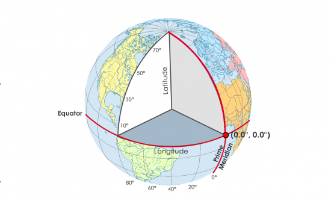
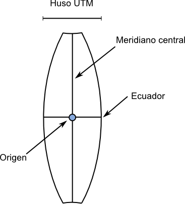
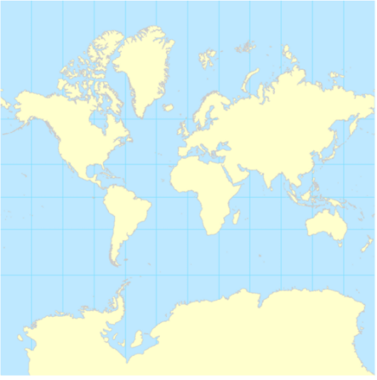
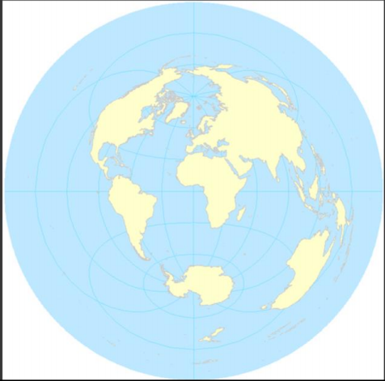
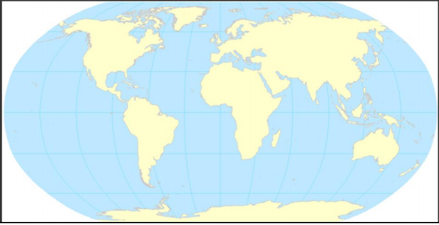
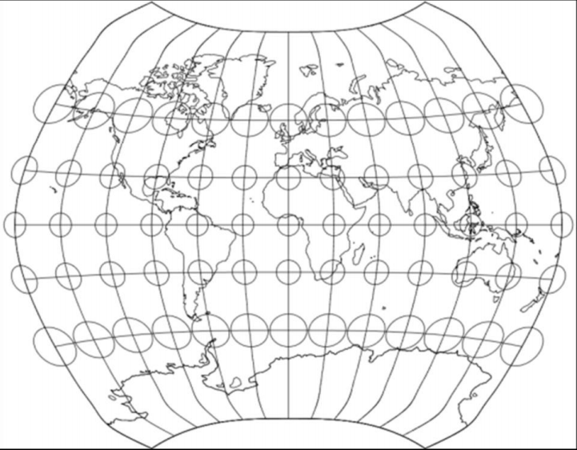
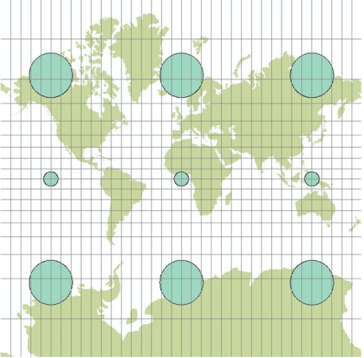

Sistema de Referencia de Coordenadas (SRC) y Proyecciones Geográfica
Introducción a la Tecnología de Información Geográfica (IMSE1014)
Contenidos
- ¿Qué hemos visto?
- ¿Todos los mapas están mal?
- Introducción a los SRC
- Datum
- Proyecciones
- Sistemas de referencia de coordenadas 3D
- Sistemas de referencia de coordenadas 2D
1. ¿Qué hemos visto?
Contenidos hasta el momento
. . .
- ¿Qué son los SIG y cuáles son sus partes?
. . .
- Conceptos del Espacio
. . .
- Modelos de datos geospaciales y sus formatos
. . .
- Atributos y tabla de atributos
Antes de empezar..
¿Es la tierra redonda?
¿Cómo lo sabemos?
2. ¿Todos los mapas están mal?
¿Cuál es la superficie real?
3. Introducción a los SRC
¿Por qué necesito saber esto?
- Los
SIGtrabajan con información espacial
. . .
- Los datos se deben ubicar en una posición en el espacio
. . .
- Aunque los
globos terráqueosson buenos para propósitos de visualización, no son prácticos para otros usos
. . .
- Una tierra redonda no se puede ajustar sin distorsión en una hoja de papel plano
Distorsión en un mapa
Coordenadas
Representar el
espacioes importante¿Cómo podemos representar este espacio numéricamente?
SRC 2D y 3D
Sistemas de Coordenadas 3D
Coordenadas esféricas
Solo 3D
No ignora la curvatura de la tierra
Utiliza dos ángulos de rotación (latitud/longitud) y un radio para especificar la ubicación.
Coordenadas esféricas

Longitud (aka Meridianos)
Se mide de Este a Oeste
Varía de +180°E a -180° O

Latitud (aka Paralelos)
- Se mide de Norte a Sur
- Varía desde +90°N a -90°S
Representación esférica de las coordenadas
Latitud y longitud se pueden representar de dos formas
- Grados, Minutos, Segundos (GMS)
- -34°23’45.23”, +124°12’45.32”
- Grados decimales (GD)
- -34.395897, 124.212589 (usados por computador)
- Grados, Minutos, Segundos (GMS)
Sistemas de Coordenadas 2D
Coordenadas Cartesianas
- Define la ubicación y localización espacial
.2D(x,y)
3D (x,y,z)

Coordenadas Cartesianas
Los datos SIG tipicamente utilizan el sistema cartesiano
Ignora la curvatura de la tierra
- Usualmente aceptable para áreas pequeñas
Representación de coordenadas cartesianas
- Muchas representaciones posibles
- Incluso puedes crear las tuyas.
- Representación comun.
- Sistema de Coordenadas Universal Transversal de Mercator (UTM)
- Sistema de coordenadas de plano de estado (SPCS) (Estados Unidos)
Datum
Forma de la tierra
Geoide: superficie equipotencial del campo gravitatorio terrestre que coincide con el nivel del agua de mar

Forma de la tierra

Tipos de elevaciones

Forma de la tierra
Elipsoide: es la forma geométrica que mejor se adapta a la forma real de la Tierra, y por tanto la que mejor permite idealizar esta, logrando un mayor ajuste.
Definición
. . .
- Un
datumes una superficie de referencia para poder medir localizaciones en la tierra
. . .
- Un datum tiene dos componenetes principales
. . .
- especificaciones de un elipsoide
. . .
- conjunto de puntos y líneas que han sido reconocidos y definen el origen y la orientación de las líneas de latitud y longitud
. . .
Ejemplos Elipsoides
Datum comunes en Chile
Provisional Sudamericano de 1956 (PSAD56)
Utilizado para cartografía 1:50.000 y 1:100.000
Elipsoide internacional de 1924 (Hayford)
Cubre Chile en el rango 17°30° - 43°30’ latitud sur.
Datum comunes
Sudamericano del 1969 (SAD69)
Utilizado para cartografía regular 1:50.000 de la zona austral
Utilizado para cartografía nacional 1:25.000 de la zona austral
Elipsoide de referencia Sudamericano 1969
Empleado desde los 43°30’ a los 56° latitud sur
Datum comunes
Sistema Geodésico Mundial 1984 (WGS84)
Basado en medicones de satélite doppler
Basado en el elipsoide WGS84, que es similar al elipsoide GRS80
Los datum no son estáticos y con frecuencia son actualizados y ajustados a lo largo del tiempo.
WGS84 ha sido actualizado multiples veces.
Datum verticales
Datum vertical: una referencia para especificar elevación
- Establecido a través de una serie de puntos de control medidos.
Normal Chilena NCh-ISO 19111-2011
Sistema de Referencia de Coordenadas Verticales: Sistema de referencia de coordenadas unidimensionales basado en un Datum Vertical.Sistema de Coordenadas Verticales: sistema de coordenadas unidimensionales usados para mediciones de altura o profundidad relacionada con la gravedad.Datum Vertical: datum que describe la relación de alturas o profundidades relacionadas con la gravedad a la tierra.
Universal Transversal de Mercator (UTM)
Universal Transversal de Mercator (UTM)
Sistema de coordenadas global
Divide la tierra en zonas de 6° de ancho y se extiende desde 80°S a 84°N.
Enumerados desde 1 a 60 hacia el Este desde 180° O
- Las zonas también se dividen en norte y sur de acuerdo al Ecuador
UTM es de uso comun para datos y áreas de estudio que cubren regiones extensas.
Las coordenadas son siempre positivas y especificas en dirección Este (X) y dirección Norte (Y)
Universal Transversal de Mercator (UTM)

UTM Chile
¿Cuáles husos corresponden a Chile?
Huso 18 Sur (-78° a -72° de longitud)
Huso 19 Sur (-72° a -66° de longitud)

Universal Transversal de Mercator (UTM)

Universal Transversal de Mercator (UTM)
El origen no tiene una coordenada
Xde 0 metros, sino de500.000 metros.El origen tiene una coordenada
Yde10.000.000 metros

Universal Transversal de Mercator (UTM)
El origen no tiene una coordenada
Xde 0 metros, sino de500.000 metros.El origen tiene una coordenada
Yde10.000.000 metros
5. Proyecciones
Introducción a las proyecciones
Proyección geográfica:una representación sistemática de ubicaciones desde la curva superficie terrestre sobre una superficie plana del mapa.Propósito:Forma práctica de retratar la curvatura de la tierra en una superficie plana
Es dificl llevar una esfera en el bolsillo
Introducción a las proyecciones

Introducción a las proyecciones
- Idea ilustrativa básica de un mapa proyectado

Las tres familias de proyecciones cartográficas

Tipos de proyecciones cartográficas
Tangente
Tipos de proyecciones cartográficas
Secante

Orientación de proyecciones cartográficas
Precisión de las proyecciones cartográficas
Todas las proyecciones tienen alteración de área, forma, distancia y dirección en una proyección geográfica.
¿Por qué?
Todos los mapas tienen errores debido al proceso de transformación 3D a 2D
¿Cómo?
Al proyectar una superficie esférica en un plano causa un rasgado, deformación o compresión de la superficie.
Precisión de las proyecciones cartográficas
Son cuatro
AreaFormaDistanciaDirección
Estas cuatro propiedades de proyección de mapa describen cuatro características de una proyección geográfica que pueden ser mantenidas o distorsionadas.
Precisión de las proyecciones cartográficas
- Propiedades mayores
Área y Forma: mutuamente excluyenetes
- Propiedades menores
Distancia y Dirección:
No pueden existir en todas partes en un mapa
Distorción del mapa
Son inevitables cuando se crea un mapa plano a partir de una esféra
La distorción puede tomar distintas formas en diferentes partes del mapa
Pocos puntos donde la distorsión es cero.
La distorción comunmente es menor cerca de los puntos o lineas de intersección dónde la superficie del mapa intersecta la esfera.
Distorción del mapa
Un mapa puede presentar una o más -
pero nunca todas- al mismo tiempo de las siguientes propiedadesÁrea real
Distancia real
Dirección real
Forma real
Proyección Geográfica de Igual Área
También conocido como: proyección geográfica equivalente
Objetivo: preservar las relaciones de área de todas partes del mundo
Características identificativas:
los meridianos y paralelos no forman ángulos rectos.
esta presente la distorsión de distancia
la forma está sesgada.
Proyección Geográfica de Igual Área
Útil para:
para mapas temáticos cuantitativos generales
cuando se desea mantener las propiedades de área
Proyección Geográfica de Igual Área
Proyección cilíndrica de igual área

Proyección Geográfica de Igual Área
Hammer-Aitoff

Proyección Geográfica Conforme
También conocida como: proyección geográfica ortomórfica
Objetivo: conservar los ángulos alrededor de los puntos y la forma en áreas pequeñas
misma escala en todas las direcciones hacia/desde un punto en el mapa
Características identificativas:
meridianos intersectan paralelos en ángulo recto
las áreas están distorsionadas significativamente a escalas pequeñas
las formas de regiones grandes pueden estar severamente distorsionadas
Proyección Geográfica Conforme
Útil para:
mapas a gran escala
fenómeno con patrones radiales circulares (transmisiones de radio, direcciones promedio del viento)
Proyección Geográfica Conforme

Proyección Geográfica Equidistante
Objetivo: preservar grandes distancias circulares
se puede mantener la distancia real desde un punto a todos los demás puntos, o desde unos pocos puntos seleccionados a otros, pero no desde todos los puntos a todos los demás puntos
la escala es uniforme a lo largo de estas líneas que mantienen la distancia real
Características identificativas:
no es de tipo conforme ni de igual área,
parece menos distorsionado.
Proyección Geográfica Equidistante
Útil para
Mapas de propósito general
Atlas
Proyección Geográfica Equidistante
Proyección equidistante cilíndrica
Proyección Geográfica Acimutal
También conocida como: dirección verdadera
Objetivo: conserva la dirección de un punto a todos los demás puntos en el mapa.
Es importante tener en cuenta que la dirección no es la verdadera entre puntos no centrales
Es útil para
- preservar la dirección desde un punto
Proyección Geográfica Acimutal
Proyección geográfica Azimutal equidistante

Combinación de proyecciones geográficas en una única proyección
| . | Igual Area | Conforme | Equidistante | Acimutal |
|---|---|---|---|---|
| Igual área | – | NO | NO | SI |
| Conforme | NO | – | NO | SI |
| Equidistante | NO | NO | – | SI |
| Acimutal | SI | SI | SI | – |
Proyección Geográfica de Mínimo Error
También conocido como: proyección de compromiso
Objetivo: Minimizar todas las propiedades de la proyección geográfica
Útil para: cartografía geográfica general
Proyección Geográfica de Mínimo Error
Proyección geográfica de Robinson

Proyecciones de forma interactiva
Indicatriz de Tissot
¿Qué es las indicatriz de Tissot?
Todos los mapas proyectados distorsionan la
forma,área,direcciónydistancia.La indicatriz de Tissor ayuda a cuantificar la distorsión y y propiedades de la proyección.
se compone de círculos inconmensurablemente pequeños centrados en puntos en la tierra
considerar la forma de los circulos antes de proyectar el mapa
¿Qué es las indicatriz de Tissot?
¿Qué es las indicatriz de Tissot?
Interpretando la indicatriz de Tissot
Igual área
Los circulos se transforman en elipses pero mantienen su área
Conforme (igual forma)
Los nciruclos se transforman en circulos pero los tamaños varian en el mapa
Interpretando la indicatriz de Tissot

Interpretando la indicatriz de Tissot

Interpretando la indicatriz de Tissot

Interpretando la indicatriz de Tissot

Propiedades de proyección conforme
Proyección de Mercator

Propiedades de projección de igual área
Proyección plana cuarto polar

Propiedades de proyección equidistante
Proyecicón cilíndrica equidistante